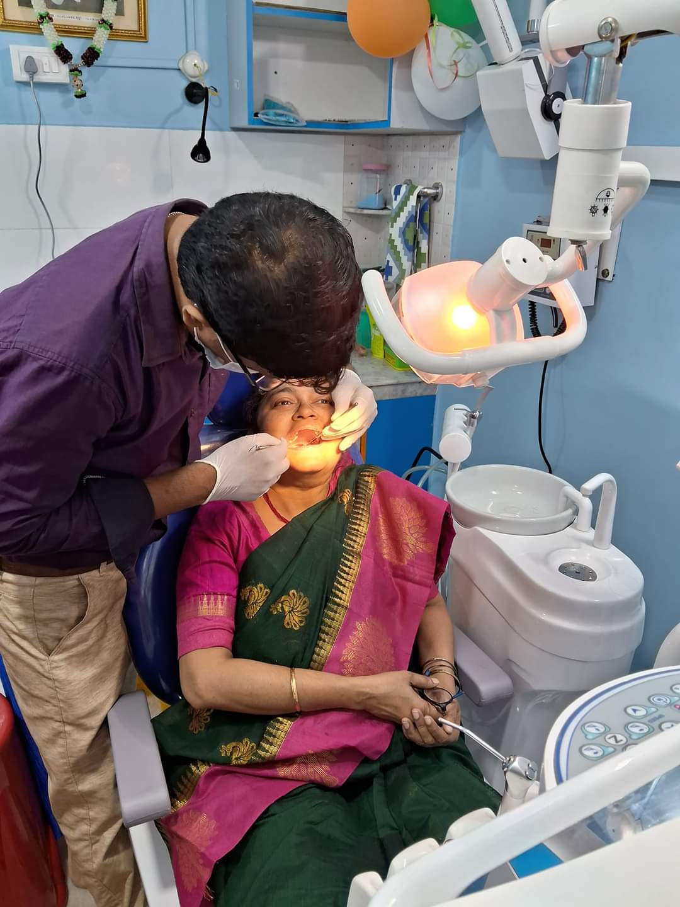

Professional dental services for Yellareddy residents at Hitech Dental Clinic, Nizamabad.

Yellareddy is a town in the Nizamabad district region with a growing population that needs access to quality healthcare. For dental care, Hitech Dental Clinic in Nizamabad is the preferred destination for Yellareddy patients seeking expert treatment.
We welcome patients from Yellareddy town and the surrounding mandal villages. Our team is experienced in handling diverse cases and communicates clearly in Telugu and Hindi to ensure every patient understands their treatment.
Yellareddy is approximately 40 km from Nizamabad city. Plan your visit by calling ahead to schedule an appointment that fits your travel time.